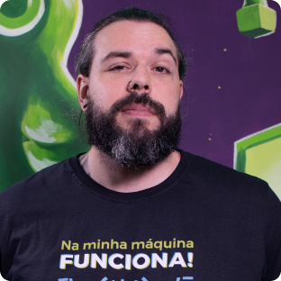
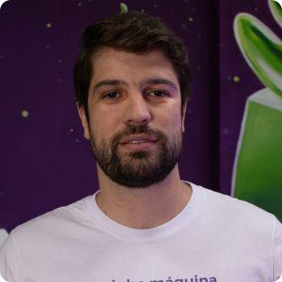
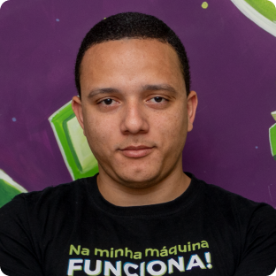
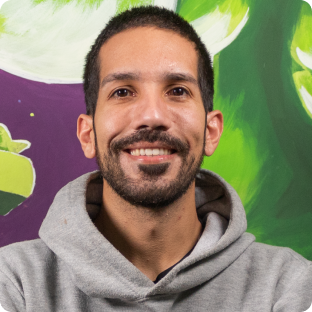
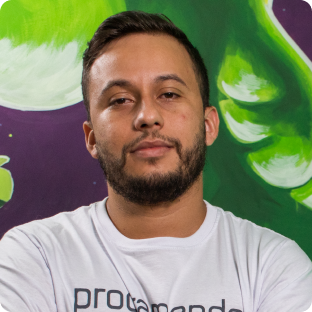

CTO de duas empresas de tecnologia, Devaria e Verzel Tecnologia, ambas focadas no mercado de desenvolvimento de softwares.
Daniel Castello

CFO da Verzel Tecnologia, com mais de 18 anos de experiência no mercado de programação, focado em soluções digitais e tecnologia. Bacharel em Sistemas da Informação (FIAP); pós-graduado em Empreendedorismo e Novos Negócios (FGV); MBA em Gestão de Tecnologia da Informação (FIAP), Arquitetura de Soluções (FIAP) e Gestão de Projetos (FIAP).
Douglas Oliveira

COO da Verzel Soluções em Sistemas, com vasta experiência atuando com desenvolvimento de diversos tipos de sistemas em diferentes segmentos. Antes de ser diretor, é um dos melhores programadores do mercado, tanto em frontend quanto em desenho de arquiteturas avançadas, tendo atuado em sistemas de finanças, seguros e inovação, entre outras.
Filipe Campos

Co-Founder & CEO da Scoder, atuou anteriormente como CTO da Aurem, uma startup inovadora em acessibilidade e comunicação. Especialista técnico em Python e linguagens de backend avançadas, desenvolveu sistemas complexos para diversas empresas, inclusive grandes multinacionais.
Kaique Jesus

Líder Técnico e especialista em desenvolvimento mobile, com sólidos conhecimentos em arquitetura híbrida e nativa. Além de instrutor na Devaria, também ministra cursos regulares em outras instituições de ensino de tecnologia, e já foi instrutor de curso de aprendizagem na ONG Gerando Falcões, que ajuda pessoas de comunidades a ingressarem no mercado.
Daniel, Douglas, Filipe, Kaique & Rafael
Os Professores são especialistas em desenvolvimento de sistema e possuem mais de 10 anos de experiencia
Todas as aulas de back-end e front-endserão conduzidas por Rafa, Douglas e Felipe. as aulas de Mobileconduzida pelo professor Kaique e As demais aulas serão administradas pelo professor Daniel, que é responsável pela gestão de dados. 😊